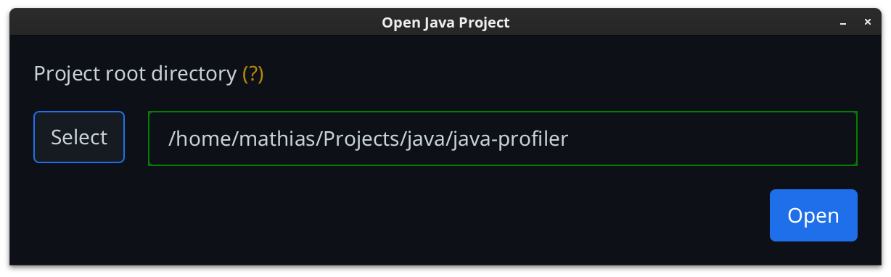

JavaFX UI
An easy-to-use graphical application was created (using the JavaFX toolkit), to configure parameters and arguments for the command-line tool. It automatically calls the profiler in a new terminal window with the specified options.
Golden (?) labels can be hovered over for more information about each field.
Open project dialog
Before displaying the main application view, a project directory must be chosen, using the initial selection dialog.

Clicking Select will open the system's native file-picker dialog to choose a folder. Alternatively, the path can be entered directly into the text field.
As soon as a valid folder path is entered, the main application window can be invoked with the Open button.
The entered path will be stored in a local file and pre-filled on the next program execution.
Main application window

Using the file tree on the left, the sources directory and main file can be selected. Depending on the run mode this may be required.
Assigning a file or directory to a parameter field can be done by the Return key, or using the context menu on a any item in the tree.
The tree view highlights important items in color:
- blue for the selected sources directory
- green for the selected main file
- brown for the (hidden) output directory
.profiler
The top menu bar allows rebuilding the file tree and saving or restoring currently set parameters (will be saved in the
output directory as parameters.dat).
When clicking Run tool, a system-native terminal will be launched, showing the program output and allowing user input (useful for interactive programs). The terminal application to use can be selected in the user interface.
The effectively executed terminal command can be previewed with the Preview command button.
Open report will only show up once the .profiler/report/index.html file exists.
Clicking it opens the report in the system's default application for HTML files (usually a browser).
JavaFX Theme
The UI currently uses the PrimerDark theme from AtlantaFX as a userAgentStylesheet.